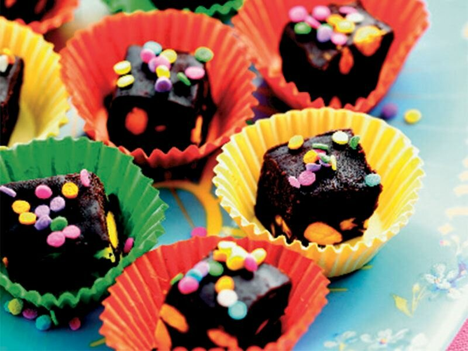

Çikolata Küpleri
Bitter çikolatalı ve şam fıstıklı tadımlık lezzetler… Yalnızca 4 malzeme ile hazırlanan çikolata küpleri, renkli kağıtlarda veya kürdan batırılarak servis edilir. Özellikle kalabalık sofralarda yer verilen çikolata küpleri, doğum günü gibi özel etkinliklerde de sunulabilir .
Tarif : Natali Gökyay